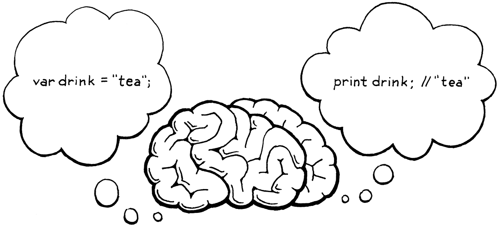

Statements and State
All my life, my heart has yearned for a thing I cannot name. André Breton, Mad Love
The interpreter we have so far feels less like programming a real language and more like punching buttons on a calculator. “Programming” to me means building up a system out of smaller pieces. We can’t do that yet because we have no way to bind a name to some data or function. We can’t compose software without a way to refer to the pieces.
To support bindings, our interpreter needs internal state. When you define a variable at the beginning of the program and use it at the end, the interpreter has to hold on to the value of that variable in the meantime. So in this chapter, we will give our interpreter a brain that can not just process, but remember.
State and statements go hand in hand. Since statements, by definition, don’t evaluate to a value, they need to do something else to be useful. That something is called a side effect. It could mean producing user-visible output or modifying some state in the interpreter that can be detected later. The latter makes them a great fit for defining variables or other named entities.
In this chapter, we’ll do all of that. We’ll define statements that produce
output (print) and create state (var). We’ll add expressions to access and
assign to variables. Finally, we’ll add blocks and local scope. That’s a lot to
stuff into one chapter, but we’ll chew through it all one bite at a time.
8 . 1Statements
We start by extending Lox’s grammar with statements. They aren’t very different from expressions. We start with the two simplest kinds:
-
An expression statement lets you place an expression where a statement is expected. They exist to evaluate expressions that have side effects. You may not notice them, but you use them all the time in C, Java, and other languages. Any time you see a function or method call followed by a
;, you’re looking at an expression statement. -
A
printstatement evaluates an expression and displays the result to the user. I admit it’s weird to bake printing right into the language instead of making it a library function. Doing so is a concession to the fact that we’re building this interpreter one chapter at a time and want to be able to play with it before it’s all done. To make print a library function, we’d have to wait until we had all of the machinery for defining and calling functions before we could witness any side effects.
New syntax means new grammar rules. In this chapter, we finally gain the ability to parse an entire Lox script. Since Lox is an imperative, dynamically typed language, the “top level” of a script is simply a list of statements. The new rules are:
program → statement* EOF ; statement → exprStmt | printStmt ; exprStmt → expression ";" ; printStmt → "print" expression ";" ;
The first rule is now program, which is the starting point for the grammar and
represents a complete Lox script or REPL entry. A program is a list of
statements followed by the special “end of file” token. The mandatory end token
ensures the parser consumes the entire input and doesn’t silently ignore
erroneous unconsumed tokens at the end of a script.
Right now, statement only has two cases for the two kinds of statements we’ve
described. We’ll fill in more later in this chapter and in the following ones.
The next step is turning this grammar into something we can store in memory—syntax trees.
8 . 1 . 1Statement syntax trees
There is no place in the grammar where both an expression and a statement are
allowed. The operands of, say, + are always expressions, never statements. The
body of a while loop is always a statement.
Since the two syntaxes are disjoint, we don’t need a single base class that they all inherit from. Splitting expressions and statements into separate class hierarchies enables the Java compiler to help us find dumb mistakes like passing a statement to a Java method that expects an expression.
That means a new base class for statements. As our elders did before us, we will
use the cryptic name “Stmt”. With great foresight,
I have designed our little AST metaprogramming script in anticipation of this.
That’s why we passed in “Expr” as a parameter to defineAst(). Now we add
another call to define Stmt and its subclasses.
"Unary : Token operator, Expr right"
));
in main()
defineAst(outputDir, "Stmt", Arrays.asList(
"Expression : Expr expression",
"Print : Expr expression"
));
}
Run the AST generator script and behold the resulting “Stmt.java” file with the
syntax tree classes we need for expression and print statements. Don’t forget
to add the file to your IDE project or makefile or whatever.
8 . 1 . 2Parsing statements
The parser’s parse() method that parses and returns a single expression was a
temporary hack to get the last chapter up and running. Now that our grammar has
the correct starting rule, program, we can turn parse() into the real deal.
method parse()
replace 7 lines
List<Stmt> parse() { List<Stmt> statements = new ArrayList<>(); while (!isAtEnd()) { statements.add(statement()); } return statements; }
This parses a series of statements, as many as it can find until it hits the end
of the input. This is a pretty direct translation of the program rule into
recursive descent style. We must also chant a minor prayer to the Java verbosity
gods since we are using ArrayList now.
package com.craftinginterpreters.lox;
import java.util.ArrayList;
import java.util.List;
A program is a list of statements, and we parse one of those statements using this method:
add after expression()
private Stmt statement() { if (match(PRINT)) return printStatement(); return expressionStatement(); }
A little bare bones, but we’ll fill it in with more statement types later. We
determine which specific statement rule is matched by looking at the current
token. A print token means it’s obviously a print statement.
If the next token doesn’t look like any known kind of statement, we assume it must be an expression statement. That’s the typical final fallthrough case when parsing a statement, since it’s hard to proactively recognize an expression from its first token.
Each statement kind gets its own method. First print:
add after statement()
private Stmt printStatement() { Expr value = expression(); consume(SEMICOLON, "Expect ';' after value."); return new Stmt.Print(value); }
Since we already matched and consumed the print token itself, we don’t need to
do that here. We parse the subsequent expression, consume the terminating
semicolon, and emit the syntax tree.
If we didn’t match a print statement, we must have one of these:
add after printStatement()
private Stmt expressionStatement() { Expr expr = expression(); consume(SEMICOLON, "Expect ';' after expression."); return new Stmt.Expression(expr); }
Similar to the previous method, we parse an expression followed by a semicolon. We wrap that Expr in a Stmt of the right type and return it.
8 . 1 . 3Executing statements
We’re running through the previous couple of chapters in microcosm, working our way through the front end. Our parser can now produce statement syntax trees, so the next and final step is to interpret them. As in expressions, we use the Visitor pattern, but we have a new visitor interface, Stmt.Visitor, to implement since statements have their own base class.
We add that to the list of interfaces Interpreter implements.
replace 1 line
class Interpreter implements Expr.Visitor<Object>, Stmt.Visitor<Void> {
void interpret(Expr expression) {
Unlike expressions, statements produce no values, so the return type of the visit methods is Void, not Object. We have two statement types, and we need a visit method for each. The easiest is expression statements.
add after evaluate()
@Override public Void visitExpressionStmt(Stmt.Expression stmt) { evaluate(stmt.expression); return null; }
We evaluate the inner expression using our existing evaluate() method and
discard the value. Then we return null. Java
requires that to satisfy the special capitalized Void return type. Weird, but
what can you do?
The print statement’s visit method isn’t much different.
add after visitExpressionStmt()
@Override public Void visitPrintStmt(Stmt.Print stmt) { Object value = evaluate(stmt.expression); System.out.println(stringify(value)); return null; }
Before discarding the expression’s value, we convert it to a string using the
stringify() method we introduced in the last chapter and then dump it to
stdout.
Our interpreter is able to visit statements now, but we have some work to do to
feed them to it. First, modify the old interpret() method in the Interpreter
class to accept a list of statements—in other words, a program.
method interpret()
replace 8 lines
void interpret(List<Stmt> statements) { try { for (Stmt statement : statements) { execute(statement); } } catch (RuntimeError error) { Lox.runtimeError(error); } }
This replaces the old code which took a single expression. The new code relies on this tiny helper method:
add after evaluate()
private void execute(Stmt stmt) { stmt.accept(this); }
That’s the statement analogue to the evaluate() method we have for
expressions. Since we’re working with lists now, we need to let Java know.
package com.craftinginterpreters.lox;
import java.util.List;
class Interpreter implements Expr.Visitor<Object>,
The main Lox class is still trying to parse a single expression and pass it to the interpreter. We fix the parsing line like so:
Parser parser = new Parser(tokens);
in run()
replace 1 line
List<Stmt> statements = parser.parse();
// Stop if there was a syntax error.
And then replace the call to the interpreter with this:
if (hadError) return;
in run()
replace 1 line
interpreter.interpret(statements);
}
Basically just plumbing the new syntax through. OK, fire up the interpreter and give it a try. At this point, it’s worth sketching out a little Lox program in a text file to run as a script. Something like:
print "one"; print true; print 2 + 1;
It almost looks like a real program! Note that the REPL, too, now requires you to enter a full statement instead of a simple expression. Don’t forget your semicolons.
8 . 2Global Variables
Now that we have statements, we can start working on state. Before we get into all of the complexity of lexical scoping, we’ll start off with the easiest kind of variables—globals. We need two new constructs.
-
A variable declaration statement brings a new variable into the world.
var beverage = "espresso";
This creates a new binding that associates a name (here “beverage”) with a value (here, the string
"espresso"). -
Once that’s done, a variable expression accesses that binding. When the identifier “beverage” is used as an expression, it looks up the value bound to that name and returns it.
print beverage; // "espresso".
Later, we’ll add assignment and block scope, but that’s enough to get moving.
8 . 2 . 1Variable syntax
As before, we’ll work through the implementation from front to back, starting with the syntax. Variable declarations are statements, but they are different from other statements, and we’re going to split the statement grammar in two to handle them. That’s because the grammar restricts where some kinds of statements are allowed.
The clauses in control flow statements—think the then and else branches of
an if statement or the body of a while—are each a single statement. But
that statement is not allowed to be one that declares a name. This is OK:
if (monday) print "Ugh, already?";
But this is not:
if (monday) var beverage = "espresso";
We could allow the latter, but it’s confusing. What is the scope of that
beverage variable? Does it persist after the if statement? If so, what is
its value on days other than Monday? Does the variable exist at all on those
days?
Code like this is weird, so C, Java, and friends all disallow it. It’s as if there are two levels of “precedence” for statements. Some places where a statement is allowed—like inside a block or at the top level—allow any kind of statement, including declarations. Others allow only the “higher” precedence statements that don’t declare names.
To accommodate the distinction, we add another rule for kinds of statements that declare names.
program → declaration* EOF ; declaration → varDecl | statement ; statement → exprStmt | printStmt ;
Declaration statements go under the new declaration rule. Right now, it’s only
variables, but later it will include functions and classes. Any place where a
declaration is allowed also allows non-declaring statements, so the
declaration rule falls through to statement. Obviously, you can declare
stuff at the top level of a script, so program routes to the new rule.
The rule for declaring a variable looks like:
varDecl → "var" IDENTIFIER ( "=" expression )? ";" ;
Like most statements, it starts with a leading keyword. In this case, var.
Then an identifier token for the name of the variable being declared, followed
by an optional initializer expression. Finally, we put a bow on it with the
semicolon.
To access a variable, we define a new kind of primary expression.
primary → "true" | "false" | "nil" | NUMBER | STRING | "(" expression ")" | IDENTIFIER ;
That IDENTIFIER clause matches a single identifier token, which is understood
to be the name of the variable being accessed.
These new grammar rules get their corresponding syntax trees. Over in the AST generator, we add a new statement node for a variable declaration.
"Expression : Expr expression",
"Print : Expr expression",
in main()
add “,” to previous line
"Var : Token name, Expr initializer"
));
It stores the name token so we know what it’s declaring, along with the
initializer expression. (If there isn’t an initializer, that field is null.)
Then we add an expression node for accessing a variable.
"Literal : Object value",
"Unary : Token operator, Expr right",
in main()
add “,” to previous line
"Variable : Token name"
));
It’s simply a wrapper around the token for the variable name. That’s it. As always, don’t forget to run the AST generator script so that you get updated “Expr.java” and “Stmt.java” files.
8 . 2 . 2Parsing variables
Before we parse variable statements, we need to shift around some code to make
room for the new declaration rule in the grammar. The top level of a program
is now a list of declarations, so the entrypoint method to the parser changes.
List<Stmt> parse() {
List<Stmt> statements = new ArrayList<>();
while (!isAtEnd()) {
in parse()
replace 1 line
statements.add(declaration());
}
return statements;
}
That calls this new method:
add after expression()
private Stmt declaration() { try { if (match(VAR)) return varDeclaration(); return statement(); } catch (ParseError error) { synchronize(); return null; } }
Hey, do you remember way back in that earlier chapter when we put the infrastructure in place to do error recovery? We are finally ready to hook that up.
This declaration() method is the method we call repeatedly when parsing a
series of statements in a block or a script, so it’s the right place to
synchronize when the parser goes into panic mode. The whole body of this method
is wrapped in a try block to catch the exception thrown when the parser begins
error recovery. This gets it back to trying to parse the beginning of the next
statement or declaration.
The real parsing happens inside the try block. First, it looks to see if we’re
at a variable declaration by looking for the leading var keyword. If not, it
falls through to the existing statement() method that parses print and
expression statements.
Remember how statement() tries to parse an expression statement if no other
statement matches? And expression() reports a syntax error if it can’t parse
an expression at the current token? That chain of calls ensures we report an
error if a valid declaration or statement isn’t parsed.
When the parser matches a var token, it branches to:
add after printStatement()
private Stmt varDeclaration() { Token name = consume(IDENTIFIER, "Expect variable name."); Expr initializer = null; if (match(EQUAL)) { initializer = expression(); } consume(SEMICOLON, "Expect ';' after variable declaration."); return new Stmt.Var(name, initializer); }
As always, the recursive descent code follows the grammar rule. The parser has
already matched the var token, so next it requires and consumes an identifier
token for the variable name.
Then, if it sees an = token, it knows there is an initializer expression and
parses it. Otherwise, it leaves the initializer null. Finally, it consumes the
required semicolon at the end of the statement. All this gets wrapped in a
Stmt.Var syntax tree node and we’re groovy.
Parsing a variable expression is even easier. In primary(), we look for an
identifier token.
return new Expr.Literal(previous().literal);
}
in primary()
if (match(IDENTIFIER)) {
return new Expr.Variable(previous());
}
if (match(LEFT_PAREN)) {
That gives us a working front end for declaring and using variables. All that’s left is to feed it into the interpreter. Before we get to that, we need to talk about where variables live in memory.
8 . 3Environments
The bindings that associate variables to values need to be stored somewhere. Ever since the Lisp folks invented parentheses, this data structure has been called an environment.

You can think of it like a map where the keys are variable names and the values are the variable’s, uh, values. In fact, that’s how we’ll implement it in Java. We could stuff that map and the code to manage it right into Interpreter, but since it forms a nicely delineated concept, we’ll pull it out into its own class.
Start a new file and add:
create new file
package com.craftinginterpreters.lox; import java.util.HashMap; import java.util.Map; class Environment { private final Map<String, Object> values = new HashMap<>(); }
There’s a Java Map in there to store the bindings. It uses bare strings for the keys, not tokens. A token represents a unit of code at a specific place in the source text, but when it comes to looking up variables, all identifier tokens with the same name should refer to the same variable (ignoring scope for now). Using the raw string ensures all of those tokens refer to the same map key.
There are two operations we need to support. First, a variable definition binds a new name to a value.
in class Environment
void define(String name, Object value) { values.put(name, value); }
Not exactly brain surgery, but we have made one interesting semantic choice. When we add the key to the map, we don’t check to see if it’s already present. That means that this program works:
var a = "before"; print a; // "before". var a = "after"; print a; // "after".
A variable statement doesn’t just define a new variable, it can also be used
to redefine an existing variable. We could choose
to make this an error instead. The user may not intend to redefine an existing
variable. (If they did mean to, they probably would have used assignment, not
var.) Making redefinition an error would help them find that bug.
However, doing so interacts poorly with the REPL. In the middle of a REPL session, it’s nice to not have to mentally track which variables you’ve already defined. We could allow redefinition in the REPL but not in scripts, but then users would have to learn two sets of rules, and code copied and pasted from one form to the other might not work.
So, to keep the two modes consistent, we’ll allow it—at least for global variables. Once a variable exists, we need a way to look it up.
class Environment {
private final Map<String, Object> values = new HashMap<>();
in class Environment
Object get(Token name) { if (values.containsKey(name.lexeme)) { return values.get(name.lexeme); } throw new RuntimeError(name, "Undefined variable '" + name.lexeme + "'."); }
void define(String name, Object value) {
This is a little more semantically interesting. If the variable is found, it simply returns the value bound to it. But what if it’s not? Again, we have a choice:
-
Make it a syntax error.
-
Make it a runtime error.
-
Allow it and return some default value like
nil.
Lox is pretty lax, but the last option is a little too permissive to me. Making it a syntax error—a compile-time error—seems like a smart choice. Using an undefined variable is a bug, and the sooner you detect the mistake, the better.
The problem is that using a variable isn’t the same as referring to it. You can refer to a variable in a chunk of code without immediately evaluating it if that chunk of code is wrapped inside a function. If we make it a static error to mention a variable before it’s been declared, it becomes much harder to define recursive functions.
We could accommodate single recursion—a function that calls itself—by declaring the function’s own name before we examine its body. But that doesn’t help with mutually recursive procedures that call each other. Consider:
fun isOdd(n) { if (n == 0) return false; return isEven(n - 1); } fun isEven(n) { if (n == 0) return true; return isOdd(n - 1); }
The isEven() function isn’t defined by the time we
are looking at the body of isOdd() where it’s called. If we swap the order of
the two functions, then isOdd() isn’t defined when we’re looking at
isEven()’s body.
Since making it a static error makes recursive declarations too difficult, we’ll defer the error to runtime. It’s OK to refer to a variable before it’s defined as long as you don’t evaluate the reference. That lets the program for even and odd numbers work, but you’d get a runtime error in:
print a; var a = "too late!";
As with type errors in the expression evaluation code, we report a runtime error by throwing an exception. The exception contains the variable’s token so we can tell the user where in their code they messed up.
8 . 3 . 1Interpreting global variables
The Interpreter class gets an instance of the new Environment class.
class Interpreter implements Expr.Visitor<Object>,
Stmt.Visitor<Void> {
in class Interpreter
private Environment environment = new Environment();
void interpret(List<Stmt> statements) {
We store it as a field directly in Interpreter so that the variables stay in memory as long as the interpreter is still running.
We have two new syntax trees, so that’s two new visit methods. The first is for declaration statements.
add after visitPrintStmt()
@Override public Void visitVarStmt(Stmt.Var stmt) { Object value = null; if (stmt.initializer != null) { value = evaluate(stmt.initializer); } environment.define(stmt.name.lexeme, value); return null; }
If the variable has an initializer, we evaluate it. If not, we have another choice to make. We could have made this a syntax error in the parser by requiring an initializer. Most languages don’t, though, so it feels a little harsh to do so in Lox.
We could make it a runtime error. We’d let you define an uninitialized variable,
but if you accessed it before assigning to it, a runtime error would occur. It’s
not a bad idea, but most dynamically typed languages don’t do that. Instead,
we’ll keep it simple and say that Lox sets a variable to nil if it isn’t
explicitly initialized.
var a; print a; // "nil".
Thus, if there isn’t an initializer, we set the value to null, which is the
Java representation of Lox’s nil value. Then we tell the environment to bind
the variable to that value.
Next, we evaluate a variable expression.
add after visitUnaryExpr()
@Override public Object visitVariableExpr(Expr.Variable expr) { return environment.get(expr.name); }
This simply forwards to the environment which does the heavy lifting to make sure the variable is defined. With that, we’ve got rudimentary variables working. Try this out:
var a = 1; var b = 2; print a + b;
We can’t reuse code yet, but we can start to build up programs that reuse data.
8 . 4Assignment
It’s possible to create a language that has variables but does not let you
reassign—or mutate—them. Haskell is one example. SML supports only
mutable references and arrays—variables cannot be reassigned. Rust steers you
away from mutation by requiring a mut modifier to enable assignment.
Mutating a variable is a side effect and, as the name suggests, some language folks think side effects are dirty or inelegant. Code should be pure math that produces values—crystalline, unchanging ones—like an act of divine creation. Not some grubby automaton that beats blobs of data into shape, one imperative grunt at a time.
Lox is not so austere. Lox is an imperative language, and mutation comes with the territory. Adding support for assignment doesn’t require much work. Global variables already support redefinition, so most of the machinery is there now. Mainly, we’re missing an explicit assignment notation.
8 . 4 . 1Assignment syntax
That little = syntax is more complex than it might seem. Like most C-derived
languages, assignment is an expression and not a
statement. As in C, it is the lowest precedence expression form. That means the
rule slots between expression and equality (the next lowest precedence
expression).
expression → assignment ; assignment → IDENTIFIER "=" assignment | equality ;
This says an assignment is either an identifier followed by an = and an
expression for the value, or an equality (and thus any other) expression.
Later, assignment will get more complex when we add property setters on
objects, like:
instance.field = "value";
The easy part is adding the new syntax tree node.
defineAst(outputDir, "Expr", Arrays.asList(
in main()
"Assign : Token name, Expr value",
"Binary : Expr left, Token operator, Expr right",
It has a token for the variable being assigned to, and an expression for the new
value. After you run the AstGenerator to get the new Expr.Assign class, swap out
the body of the parser’s existing expression() method to match the updated
rule.
private Expr expression() {
in expression()
replace 1 line
return assignment();
}
Here is where it gets tricky. A single token lookahead recursive descent parser
can’t see far enough to tell that it’s parsing an assignment until after it
has gone through the left-hand side and stumbled onto the =. You might wonder
why it even needs to. After all, we don’t know we’re parsing a + expression
until after we’ve finished parsing the left operand.
The difference is that the left-hand side of an assignment isn’t an expression that evaluates to a value. It’s a sort of pseudo-expression that evaluates to a “thing” you can assign to. Consider:
var a = "before"; a = "value";
On the second line, we don’t evaluate a (which would return the string
“before”). We figure out what variable a refers to so we know where to store
the right-hand side expression’s value. The classic terms for these
two constructs are l-value and r-value. All
of the expressions that we’ve seen so far that produce values are r-values. An
l-value “evaluates” to a storage location that you can assign into.
We want the syntax tree to reflect that an l-value isn’t evaluated like a normal
expression. That’s why the Expr.Assign node has a Token for the left-hand
side, not an Expr. The problem is that the parser doesn’t know it’s parsing an
l-value until it hits the =. In a complex l-value, that may occur many tokens later.
makeList().head.next = node;
We have only a single token of lookahead, so what do we do? We use a little trick, and it looks like this:
add after expressionStatement()
private Expr assignment() { Expr expr = equality(); if (match(EQUAL)) { Token equals = previous(); Expr value = assignment(); if (expr instanceof Expr.Variable) { Token name = ((Expr.Variable)expr).name; return new Expr.Assign(name, value); } error(equals, "Invalid assignment target."); } return expr; }
Most of the code for parsing an assignment expression looks similar to that of
the other binary operators like +. We parse the left-hand side, which can be
any expression of higher precedence. If we find an =, we parse the right-hand
side and then wrap it all up in an assignment expression tree node.
One slight difference from binary operators is that we don’t loop to build up a
sequence of the same operator. Since assignment is right-associative, we instead
recursively call assignment() to parse the right-hand side.
The trick is that right before we create the assignment expression node, we look at the left-hand side expression and figure out what kind of assignment target it is. We convert the r-value expression node into an l-value representation.
This conversion works because it turns out that every valid assignment target happens to also be valid syntax as a normal expression. Consider a complex field assignment like:
newPoint(x + 2, 0).y = 3;
The left-hand side of that assignment could also work as a valid expression.
newPoint(x + 2, 0).y;
The first example sets the field, the second gets it.
This means we can parse the left-hand side as if it were an expression and then after the fact produce a syntax tree that turns it into an assignment target. If the left-hand side expression isn’t a valid assignment target, we fail with a syntax error. That ensures we report an error on code like this:
a + b = c;
Right now, the only valid target is a simple variable expression, but we’ll add fields later. The end result of this trick is an assignment expression tree node that knows what it is assigning to and has an expression subtree for the value being assigned. All with only a single token of lookahead and no backtracking.
8 . 4 . 2Assignment semantics
We have a new syntax tree node, so our interpreter gets a new visit method.
add after visitVarStmt()
@Override public Object visitAssignExpr(Expr.Assign expr) { Object value = evaluate(expr.value); environment.assign(expr.name, value); return value; }
For obvious reasons, it’s similar to variable declaration. It evaluates the
right-hand side to get the value, then stores it in the named variable. Instead
of using define() on Environment, it calls this new method:
add after get()
void assign(Token name, Object value) { if (values.containsKey(name.lexeme)) { values.put(name.lexeme, value); return; } throw new RuntimeError(name, "Undefined variable '" + name.lexeme + "'."); }
The key difference between assignment and definition is that assignment is not allowed to create a new variable. In terms of our implementation, that means it’s a runtime error if the key doesn’t already exist in the environment’s variable map.
The last thing the visit() method does is return the assigned value. That’s
because assignment is an expression that can be nested inside other expressions,
like so:
var a = 1; print a = 2; // "2".
Our interpreter can now create, read, and modify variables. It’s about as sophisticated as early BASICs. Global variables are simple, but writing a large program when any two chunks of code can accidentally step on each other’s state is no fun. We want local variables, which means it’s time for scope.
8 . 5Scope
A scope defines a region where a name maps to a certain entity. Multiple scopes enable the same name to refer to different things in different contexts. In my house, “Bob” usually refers to me. But maybe in your town you know a different Bob. Same name, but different dudes based on where you say it.
Lexical scope (or the less commonly heard static scope) is a specific style of scoping where the text of the program itself shows where a scope begins and ends. In Lox, as in most modern languages, variables are lexically scoped. When you see an expression that uses some variable, you can figure out which variable declaration it refers to just by statically reading the code.
For example:
{
var a = "first";
print a; // "first".
}
{
var a = "second";
print a; // "second".
}
Here, we have two blocks with a variable a declared in each of them. You and
I can tell just from looking at the code that the use of a in the first
print statement refers to the first a, and the second one refers to the
second.

This is in contrast to dynamic scope where you don’t know what a name refers to until you execute the code. Lox doesn’t have dynamically scoped variables, but methods and fields on objects are dynamically scoped.
class Saxophone { play() { print "Careless Whisper"; } } class GolfClub { play() { print "Fore!"; } } fun playIt(thing) { thing.play(); }
When playIt() calls thing.play(), we don’t know if we’re about to hear
“Careless Whisper” or “Fore!” It depends on whether you pass a Saxophone or a
GolfClub to the function, and we don’t know that until runtime.
Scope and environments are close cousins. The former is the theoretical concept, and the latter is the machinery that implements it. As our interpreter works its way through code, syntax tree nodes that affect scope will change the environment. In a C-ish syntax like Lox’s, scope is controlled by curly-braced blocks. (That’s why we call it block scope.)
{
var a = "in block";
}
print a; // Error! No more "a".
The beginning of a block introduces a new local scope, and that scope ends when
execution passes the closing }. Any variables declared inside the block
disappear.
8 . 5 . 1Nesting and shadowing
A first cut at implementing block scope might work like this:
-
As we visit each statement inside the block, keep track of any variables declared.
-
After the last statement is executed, tell the environment to delete all of those variables.
That would work for the previous example. But remember, one motivation for local scope is encapsulation—a block of code in one corner of the program shouldn’t interfere with some other block. Check this out:
// How loud? var volume = 11; // Silence. volume = 0; // Calculate size of 3x4x5 cuboid. { var volume = 3 * 4 * 5; print volume; }
Look at the block where we calculate the volume of the cuboid using a local
declaration of volume. After the block exits, the interpreter will delete the
global volume variable. That ain’t right. When we exit the block, we should
remove any variables declared inside the block, but if there is a variable with
the same name declared outside of the block, that’s a different variable. It
shouldn’t get touched.
When a local variable has the same name as a variable in an enclosing scope, it shadows the outer one. Code inside the block can’t see it any more—it is hidden in the “shadow” cast by the inner one—but it’s still there.
When we enter a new block scope, we need to preserve variables defined in outer scopes so they are still around when we exit the inner block. We do that by defining a fresh environment for each block containing only the variables defined in that scope. When we exit the block, we discard its environment and restore the previous one.
We also need to handle enclosing variables that are not shadowed.
var global = "outside"; { var local = "inside"; print global + local; }
Here, global lives in the outer global environment and local is defined
inside the block’s environment. In that print statement, both of those
variables are in scope. In order to find them, the interpreter must search not
only the current innermost environment, but also any enclosing ones.
We implement this by chaining the environments together. Each environment has a reference to the environment of the immediately enclosing scope. When we look up a variable, we walk that chain from innermost out until we find the variable. Starting at the inner scope is how we make local variables shadow outer ones.

Before we add block syntax to the grammar, we’ll beef up our Environment class with support for this nesting. First, we give each environment a reference to its enclosing one.
class Environment {
in class Environment
final Environment enclosing;
private final Map<String, Object> values = new HashMap<>();
This field needs to be initialized, so we add a couple of constructors.
in class Environment
Environment() { enclosing = null; } Environment(Environment enclosing) { this.enclosing = enclosing; }
The no-argument constructor is for the global scope’s environment, which ends the chain. The other constructor creates a new local scope nested inside the given outer one.
We don’t have to touch the define() method—a new variable is always
declared in the current innermost scope. But variable lookup and assignment work
with existing variables and they need to walk the chain to find them. First,
lookup:
return values.get(name.lexeme);
}
in get()
if (enclosing != null) return enclosing.get(name);
throw new RuntimeError(name,
"Undefined variable '" + name.lexeme + "'.");
If the variable isn’t found in this environment, we simply try the enclosing one. That in turn does the same thing recursively, so this will ultimately walk the entire chain. If we reach an environment with no enclosing one and still don’t find the variable, then we give up and report an error as before.
Assignment works the same way.
values.put(name.lexeme, value);
return;
}
in assign()
if (enclosing != null) { enclosing.assign(name, value); return; }
throw new RuntimeError(name,
Again, if the variable isn’t in this environment, it checks the outer one, recursively.
8 . 5 . 2Block syntax and semantics
Now that Environments nest, we’re ready to add blocks to the language. Behold the grammar:
statement → exprStmt | printStmt | block ; block → "{" declaration* "}" ;
A block is a (possibly empty) series of statements or declarations surrounded by curly braces. A block is itself a statement and can appear anywhere a statement is allowed. The syntax tree node looks like this:
defineAst(outputDir, "Stmt", Arrays.asList(
in main()
"Block : List<Stmt> statements",
"Expression : Expr expression",
It contains the list of statements that are inside
the block. Parsing is straightforward. Like other statements, we detect the
beginning of a block by its leading token—in this case the {. In the
statement() method, we add:
if (match(PRINT)) return printStatement();
in statement()
if (match(LEFT_BRACE)) return new Stmt.Block(block());
return expressionStatement();
All the real work happens here:
add after expressionStatement()
private List<Stmt> block() { List<Stmt> statements = new ArrayList<>(); while (!check(RIGHT_BRACE) && !isAtEnd()) { statements.add(declaration()); } consume(RIGHT_BRACE, "Expect '}' after block."); return statements; }
We create an empty list and then parse statements and
add them to the list until we reach the end of the block, marked by the closing
}. Note that the loop also has an explicit check for isAtEnd(). We have to
be careful to avoid infinite loops, even when parsing invalid code. If the user
forgets a closing }, the parser needs to not get stuck.
That’s it for syntax. For semantics, we add another visit method to Interpreter.
add after execute()
@Override public Void visitBlockStmt(Stmt.Block stmt) { executeBlock(stmt.statements, new Environment(environment)); return null; }
To execute a block, we create a new environment for the block’s scope and pass it off to this other method:
add after execute()
void executeBlock(List<Stmt> statements, Environment environment) { Environment previous = this.environment; try { this.environment = environment; for (Stmt statement : statements) { execute(statement); } } finally { this.environment = previous; } }
This new method executes a list of statements in the context of a given environment. Up until now, the environment field in
Interpreter always pointed to the same environment—the global one. Now, that
field represents the current environment. That’s the environment that
corresponds to the innermost scope containing the code to be executed.
To execute code within a given scope, this method updates the interpreter’s
environment field, visits all of the statements, and then restores the
previous value. As is always good practice in Java, it restores the previous
environment using a finally clause. That way it gets restored even if an
exception is thrown.
Surprisingly, that’s all we need to do in order to fully support local variables, nesting, and shadowing. Go ahead and try this out:
var a = "global a"; var b = "global b"; var c = "global c"; { var a = "outer a"; var b = "outer b"; { var a = "inner a"; print a; print b; print c; } print a; print b; print c; } print a; print b; print c;
Our little interpreter can remember things now. We are inching closer to something resembling a full-featured programming language.
Challenges
-
The REPL no longer supports entering a single expression and automatically printing its result value. That’s a drag. Add support to the REPL to let users type in both statements and expressions. If they enter a statement, execute it. If they enter an expression, evaluate it and display the result value.
-
Maybe you want Lox to be a little more explicit about variable initialization. Instead of implicitly initializing variables to
nil, make it a runtime error to access a variable that has not been initialized or assigned to, as in:// No initializers. var a; var b; a = "assigned"; print a; // OK, was assigned first. print b; // Error!
-
What does the following program do?
var a = 1; { var a = a + 2; print a; }
What did you expect it to do? Is it what you think it should do? What does analogous code in other languages you are familiar with do? What do you think users will expect this to do?
Design Note: Implicit Variable Declaration
Lox has distinct syntax for declaring a new variable and assigning to an existing one. Some languages collapse those to only assignment syntax. Assigning to a non-existent variable automatically brings it into being. This is called implicit variable declaration and exists in Python, Ruby, and CoffeeScript, among others. JavaScript has an explicit syntax to declare variables, but can also create new variables on assignment. Visual Basic has an option to enable or disable implicit variables.
When the same syntax can assign or create a variable, each language must decide what happens when it isn’t clear about which behavior the user intends. In particular, each language must choose how implicit declaration interacts with shadowing, and which scope an implicitly declared variable goes into.
-
In Python, assignment always creates a variable in the current function’s scope, even if there is a variable with the same name declared outside of the function.
-
Ruby avoids some ambiguity by having different naming rules for local and global variables. However, blocks in Ruby (which are more like closures than like “blocks” in C) have their own scope, so it still has the problem. Assignment in Ruby assigns to an existing variable outside of the current block if there is one with the same name. Otherwise, it creates a new variable in the current block’s scope.
-
CoffeeScript, which takes after Ruby in many ways, is similar. It explicitly disallows shadowing by saying that assignment always assigns to a variable in an outer scope if there is one, all the way up to the outermost global scope. Otherwise, it creates the variable in the current function scope.
-
In JavaScript, assignment modifies an existing variable in any enclosing scope, if found. If not, it implicitly creates a new variable in the global scope.
The main advantage to implicit declaration is simplicity. There’s less syntax and no “declaration” concept to learn. Users can just start assigning stuff and the language figures it out.
Older, statically typed languages like C benefit from explicit declaration because they give the user a place to tell the compiler what type each variable has and how much storage to allocate for it. In a dynamically typed, garbage-collected language, that isn’t really necessary, so you can get away with making declarations implicit. It feels a little more “scripty”, more “you know what I mean”.
But is that a good idea? Implicit declaration has some problems.
-
A user may intend to assign to an existing variable, but may have misspelled it. The interpreter doesn’t know that, so it goes ahead and silently creates some new variable and the variable the user wanted to assign to still has its old value. This is particularly heinous in JavaScript where a typo will create a global variable, which may in turn interfere with other code.
-
JS, Ruby, and CoffeeScript use the presence of an existing variable with the same name—even in an outer scope—to determine whether or not an assignment creates a new variable or assigns to an existing one. That means adding a new variable in a surrounding scope can change the meaning of existing code. What was once a local variable may silently turn into an assignment to that new outer variable.
-
In Python, you may want to assign to some variable outside of the current function instead of creating a new variable in the current one, but you can’t.
Over time, the languages I know with implicit variable declaration ended up adding more features and complexity to deal with these problems.
-
Implicit declaration of global variables in JavaScript is universally considered a mistake today. “Strict mode” disables it and makes it a compile error.
-
Python added a
globalstatement to let you explicitly assign to a global variable from within a function. Later, as functional programming and nested functions became more popular, they added a similarnonlocalstatement to assign to variables in enclosing functions. -
Ruby extended its block syntax to allow declaring certain variables to be explicitly local to the block even if the same name exists in an outer scope.
Given those, I think the simplicity argument is mostly lost. There is an argument that implicit declaration is the right default but I personally find that less compelling.
My opinion is that implicit declaration made sense in years past when most scripting languages were heavily imperative and code was pretty flat. As programmers have gotten more comfortable with deep nesting, functional programming, and closures, it’s become much more common to want access to variables in outer scopes. That makes it more likely that users will run into the tricky cases where it’s not clear whether they intend their assignment to create a new variable or reuse a surrounding one.
So I prefer explicitly declaring variables, which is why Lox requires it.